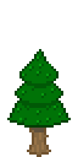
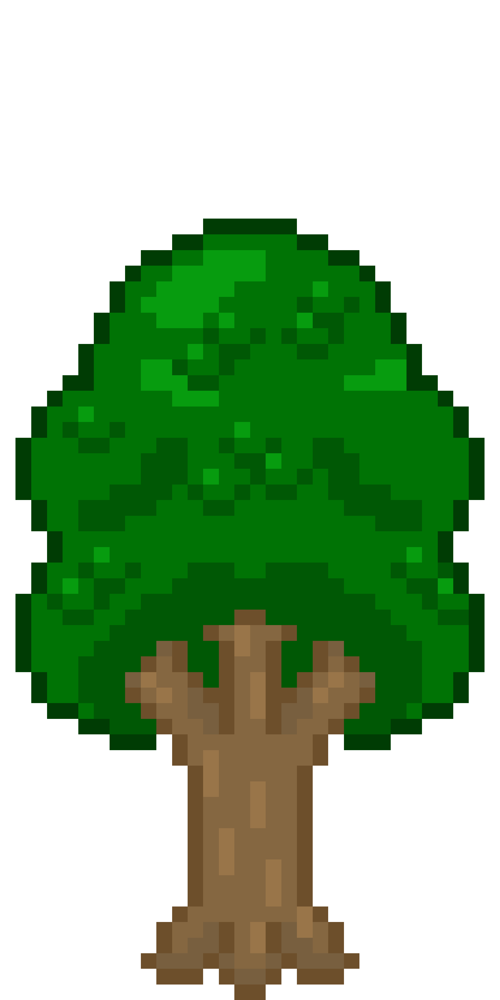

Dit spel gaat over de geschiedenis van Nederland, voornamelijk de ridder tijden. In dit spel ren je rond de wereld om informatie over het tijdperk en de plek waar je bent op te halen. Ook zijn er een paar hints naar vroegere tijden te vinden!
Dit spel is gemaakt voor kinderen tussen 7 tot 9 jaar oud. Dus het sluit aan op de leerkennis van kinderen uit groep vijf. En bevat geen ongewenste onderwerpen of bloederige graphics.
Leerdoel
In dit spel is het de bedoeling dat je bepaalde kennis van de geschiedenis kan leren en toe kan passen om verder te gaan in het spel. Ook zijn er delen waarbij er informatie vermeld wordt en dit in de vorm van de wereld uitgelegd wordt. Denk bijvoorbeeld dat je verschillende kanten op kan naar een “koning” en naar een “landsheer” en dat landsheer het goede antwoord zou zijn.
In dit spel wordt je niet zwaar gestraft als je iets fout doet, je word alleen tijdelijk terug gezet en kan niet langs een bepaald deel zonder de goede informatie te gebruiken. Ook worden er bepaalde belangrijke personen uit deze tijd vermeld en is het jaartal altijd beschikbaar.
verhaal
Je bent een ridder die van land heer naar land heer gaat om hen te dienen, op een dag vind je een speciaal kristal waarmee je sneller door de tijd kan rijzen binnen. Hierdoor kun je verschillende landheren helpen, maar kom je ook in verschillende middeleeuwse steden. Kun je deze gevaarlijke tijden door komen? En hoe kwam dit kristal hier? Kan jij dit mysterie oplosse?
Game art
Hier ga ik laten zien wat voor een stijl dit spel heeft en op welke manier de vormgeving invloed heeft op de leerstof en ervaring van het spel.

Dit is een van de bomen die gebruikt wordt in het bij de jagers en de boeren. Deze bomen komen vaak voor in koude gebieden, op deze manier laten we zien dat het in deze tijd kouder was.

Dit is een van de bomen die gebruikt wordt rond de tijd van de romeinen. Deze bomen komen vaak voor in een gematigd klimaat, hier door laten we zien dat het al minder koud was rond deze tijd.
Hier kun je vroeg gemaakt concept art zien, dat ik gemaakt heb voor dit spel. Hier door kun je goed zien welke vormgeving dit spel heeft. De mok laten wij zitten in verband met de inhoud ervan.
Dit is een voorbeeld van de karakters waarmee je zou kunnen praten binnen het spel.
Contact
Ik ben via Email bereikbaar op: daan17@ziggo.nl
Ook heb ik een Youtube kanaal waar ik videos post over mijn projecten.
Bronnen
Alle afbeeldingen zijn door mijzelf gemaakt.
De stof komt uit het Brandaan Geschiedenis boek groep 5, uitgever Malmberg